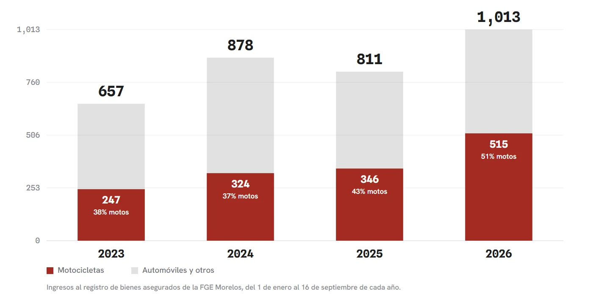
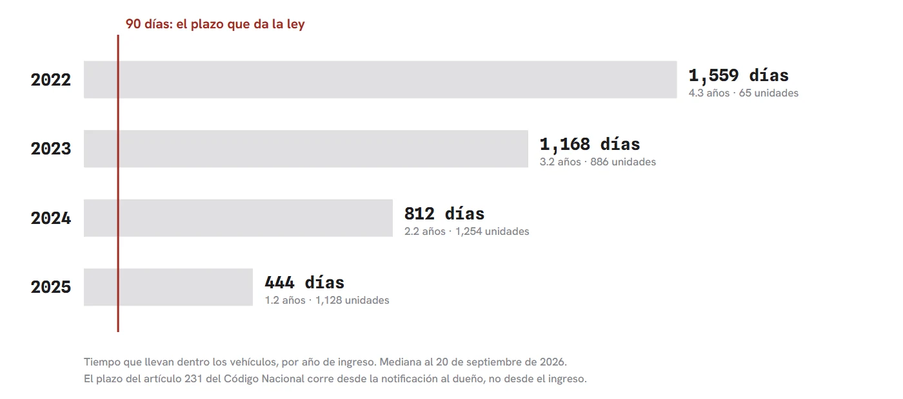

El patio de las Italikas
La Fiscalía General del Estado de Morelos publica en internet el catálogo de los vehículos que tiene asegurados, con marca, modelo, color, número de serie y fecha de ingreso. La captura íntegra del 17 de septiembre de 2026 arroja 4,359 unidades, de las cuales 1,886 son motocicletas y 997 llevan la marca Italika. El Código Nacional de Procedimientos Penales concede 90 días naturales desde la notificación para que el dueño se presente, y vencidos ese plazo el Ministerio Público debe pedir a un juez de control la declaratoria de abandono. La mediana de permanencia medida es de 639 días y el 91.8 por ciento del catálogo rebasa los 90. La ley estatal de bienes asegurados, reformada el 1 de octubre de 2025, llama al aseguramiento una medida precautoria y provisional de privación temporal, describe la venta por licitación o subasta una vez declarado el abandono, reserva por dentro el precio de la venta y permite compartir el producto con los municipios que colaboraron. Con la política de la espera de Javier Auyero (2012) y el hilo en contra completo: el registro es público, la fecha de ingreso no es la de notificación y una carpeta abierta congela el plazo con fundamento.
La Fiscalía General del Estado de Morelos publica en internet el catálogo de los vehículos que tiene asegurados. Cada ficha trae marca, modelo, color, número de serie y fecha de ingreso. Conviene decirlo desde la primera línea, porque todo lo que sigue existe gracias a esa decisión: la información es abierta y nadie escondió nada. La captura íntegra del 17 de septiembre de 2026, hecha por su propia interfaz pública, arroja 4,359 unidades. De ellas, 4,346 traen fecha de ingreso legible, el 99.7 por ciento, y solo sobre esas se calcula lo que sigue.
Conviene separar dos cosas que suelen confundirse. Este catálogo no es el corralón municipal. Al corralón de Cuautla o de cualquier ayuntamiento van a parar los vehículos que retira la policía vial por faltas de tránsito, materia de las dos piezas anteriores de este expediente. El registro de la Fiscalía reúne los vehículos retenidos porque guardan relación con un delito. Y aquí una precisión que esta columna corrige respecto de lo que se ha dicho en otros lados, incluida una versión previa de este mismo trabajo: la ficha no declara el motivo. Ninguna de las 4,359 lo hace. La propia Fiscalía menciona tres causas posibles en su acuerdo de tarifas: robo de vehículos, hechos de tránsito, o cualquier otro delito donde se haya involucrado un automotor. Cuál de las tres corresponde a cada unidad es algo que el registro no permite saber.
Lo que sí permite saber es cómo se mueve el patio, y ahí está la noticia. Comparando el mismo tramo del calendario, del 1 de enero al 16 de septiembre, en 2023 ingresaron 657 vehículos y en 2026 van 1,013: un aumento de 54 por ciento en tres años, a un ritmo de 3.9 unidades diarias. El crecimiento no es parejo. Las motocicletas pasaron de 247 a 515 en ese mismo tramo, es decir se duplicaron, y este año representan el 50.8 por ciento de todo lo que entra, cuando en 2023 eran el 37.6.

En el conjunto del patio hay 1,886 motocicletas, y una de cada dos es Italika: son 997. Importa quién las conduce. La Italika es la moto del repartidor de aplicaciones, del moto mandados, del albañil que sale a las seis de la mañana; la que se paga en abonos porque cuesta menos que el transporte público a lo largo de un año. Entran cerca de 250 al año, con una antigüedad promedio de dos años al momento de ingresar.
Tampoco se trata de chatarra acumulada. El vehículo que llegaba al patio en 2023 tenía seis años de uso; el que llega en 2026 tiene cuatro, y el 36.1 por ciento de los ingresos de este año corresponde a unidades de dos años o menos.
El Código Nacional de Procedimientos Penales concede en su artículo 231 un plazo de 90 días naturales, contados desde la notificación al interesado, para que se presente a reclamar. Contrastada con ese plazo, la permanencia real desconcierta: los vehículos ingresados en 2025 llevan de mediana un año y dos meses; los de 2024, dos años y dos meses; los de 2023, tres años y dos meses; los de 2022, cuatro años y tres meses. De los años que ya cumplieron doce meses, el cien por ciento superó el plazo. Los cuatro, sin excepción.

Ahora el reverso, y aquí hay que reconocer lo que se hizo bien. En enero de 2024, mediante reforma publicada en el Periódico Oficial 6275, la Fiscalía incorporó a su artículo 8 bis un límite expreso: "la tarifa máxima a pagar por cada uno de los conceptos será de 30 días". Con la UMA de 2026, eso significa que el cobro en el depósito de la Fiscalía no puede rebasar los 6,546 pesos, lleve el vehículo tres meses o cuatro años. Y desde el 4 de junio de 2026, por reforma publicada en el Periódico Oficial 6564, las víctimas de robo de vehículo que denunciaron dentro de las 72 horas quedan exentas del pago en ese depósito. Esa exención ya está vigente; la que entra en enero de 2027 es otra, la del Decreto 1004, que alcanza a los corralones municipales y a la Hacienda estatal. Confundirlas, como se ha hecho en la conversación pública, le quita a la gente un derecho que ya tiene.
El problema no es que no hayan hecho nada. El problema es dónde pusieron el tope.
La ley llama a esto privación temporal. La mediana medida es de un año y ocho meses.
Ese límite obliga a la Fiscalía, en el depósito de la Fiscalía. En Morelos operan más de cuarenta corralones concesionados, la mayoría saturados, donde el cobro por liberación llega a rebasar los 20 mil pesos según denunció la Oficina Coordinadora de Riesgos Asegurados. A un depósito particular, el acuerdo del órgano colegiado de la Fiscalía no le resulta vinculante. Y el registro público, que enumera marca, color y número de serie, no indica en cuál de los dos se encuentra cada unidad ni cuánto se adeuda por ella. El propietario que localiza su vehículo en la lista no puede saber si pagará 6,546 pesos, cero, o una renta sin techo.
Hay un renglón de ese mismo acuerdo que merece lectura detenida. Si la devolución se ordena dentro de los primeros 30 días, la víctima del delito obtiene 50 por ciento de descuento. Pasados esos 30 días, el descuento baja a 25 por ciento. Dicho de otro modo: mientras más se demora la autoridad, menos se le rebaja al ciudadano. Y no puede alegarse desconocimiento, porque en la exposición de motivos de esa misma reforma la Fiscalía admite que "el cumplimiento de los plazos proyectados se ve obstaculizado por la carga de trabajo con la que cuenta el Ministerio Público", lo que demora la devolución y hacía que el cobro resultara "excesivo e incluso mayor al valor del vehículo, lo cual se aleja del mandato constitucional". Reconocieron la demora propia y redujeron a la mitad el beneficio de quien la padece.
Queda un tramo del camino donde la normativa se contradice consigo misma. Declarado el abandono por un juez de control, el artículo 22 de la Ley para la Administración de Bienes Asegurados ordena enajenar "preferentemente a través de concursos tales como licitación pública o subasta". Su Reglamento, en cambio, dispone en el artículo 17 que se realicen "las gestiones necesarias para su destrucción, sobre todo de vehículos automotores". Vender genera ingresos; destruir genera costos. Cuál de las dos ocurre en la práctica es información que no aparece publicada: no existe registro público del número de unidades subastadas ni destruidas.
Ese vacío adquiere otra dimensión al lado del régimen penal. El artículo 176-BIS del Código Penal de Morelos castiga el robo de vehículo automotor con 15 a 25 años de prisión. El artículo 377, fracción I, del Código Penal Federal sanciona con 5 a 15 años a quien desmantele un vehículo robado o comercialice sus partes. Destruir una motocicleta consiste, materialmente, en desarmarla. Entre desarmarla con autorización y desarmarla sin ella median cinco a quince años de prisión, y la autorización correspondiente no se publica.
Conviene poner lo que corta en contra, porque sin ello esta columna sería propaganda con buena aritmética. El registro es público y la tarifa también: la medición de esta pieza existe porque la Fiscalía abrió ambos. La fecha de ingreso al patio no equivale a la fecha de notificación, y el plazo del artículo 231 corre desde la segunda, de modo que la permanencia medida no acredita incumplimiento. Una carpeta de investigación abierta suspende ese cómputo con pleno fundamento. Una parte del catálogo corresponde a vehículos robados y recuperados, cuya permanencia puede significar que se busca al dueño. Y el tope de 30 días, junto con la exención vigente desde junio, son medidas de protección reales que esta columna no regatea.
Aquí es donde sirve Javier Auyero. En Patients of the State (Duke University Press, 2012), el sociólogo argentino documenta que la espera frente a las oficinas públicas no es una falla del trámite sino una de sus formas: los ciudadanos pobres aprenden, en la incertidumbre y la demora, que su tiempo vale menos y que la respuesta llegará cuando el Estado decida. Los llama pacientes del Estado, con el doble sentido de quien aguarda y de quien es tratado.
De todo lo anterior surgen dos preguntas que esta columna deja abiertas porque no puede responderlas, y que sí puede responder quien las tiene. A la Fiscalía: de esos 4,359 vehículos, ¿cuántos se encuentran en su depósito de Temixco y cuántos en un corralón particular? De esa cifra depende que el tope de 6,546 pesos sea protección efectiva o mero adorno. Y a quien firma los oficios de destrucción: ¿a quién beneficia que ese papel no se publique?
Mientras tanto, y con todo lo que sí se hizo bien, el marco que debía ordenar esto sigue incompleto. El reglamento de la Ley de Movilidad, que debía establecer el procedimiento para liberar un vehículo del corralón, venció el 25 de mayo de 2026 y no aparece publicado. El padrón estatal de grúas y corralones tampoco existe, según denunciaron los transportistas ante el Congreso.
Todo lo que servía para ordenar esto está pendiente. Lo único que no está pendiente es la entrada: si el ritmo se sostiene, 2026 cerrará con cerca de 1,428 vehículos nuevos en el patio. Más de setecientos serán motos.
Novecientas noventa y siete Italikas cumplen ya su segundo año adentro. Quien las manejaba lleva el mismo tiempo esperando, y esa espera, a diferencia del expediente, no tiene número de registro.
La pieza anterior: El reglamento que nadie escribió Ver el expediente →
- Todas las normas citadas se consultaron en el acervo documental de la casa (carpeta LEYES/), con la vigencia verificada dentro de cada PDF y no en la etiqueta del portal.
- Fiscalía General del Estado de Morelos, Dirección General de Bienes Asegurados, registro público de vehículos: info.fiscaliamorelos.gob.mx/bienesasegurados/recuperados (captura íntegra del 17 de septiembre de 2026 por su interfaz pública; 4,359 registros; mediciones propias reproducibles con los scripts `_medir.py` y `_tabla_comportamiento.py` conservados junto al conjunto de datos).
- Acuerdo por el que se autorizan las tarifas por los servicios que presta la Fiscalía General del Estado de Morelos, artículo 8 bis: adicionado por acuerdo publicado en el Periódico Oficial 6168 del 8 de febrero de 2023; tope de 30 días y tabla de descuentos por reforma publicada en el Periódico Oficial 6275 Séptima Sección del 31 de enero de 2024 (http://periodico.morelos.gob.mx/obtenerPDF/2024/6275_7A.pdf); exención a víctimas de robo por reforma publicada en el Periódico Oficial 6564 del 3 de junio de 2026, vigente desde el día siguiente (https://periodico.morelos.gob.mx/obtenerPDF/2026/6564.pdf). Texto consolidado: marcojuridico.morelos.gob.mx/documentos/572/download
- Código Nacional de Procedimientos Penales, artículos 229, 231, 239, 240, 245, 246 y 250 (última reforma publicada en el DOF el 28 de noviembre de 2025): diputados.gob.mx/LeyesBiblio/pdf/CNPP.pdf
- Ley para la Administración de Bienes Asegurados de la Fiscalía General del Estado de Morelos (POEM 5243, 10 de diciembre de 2014; última reforma, Decreto 532, POEM 6474 Alcance, 1 de octubre de 2025): marcojuridico.morelos.gob.mx/documentos/2812/download
- Reglamento de la misma ley (POEM 5421, 10 de agosto de 2016), artículos 13, 14 y 17: fiscaliamorelos.gob.mx/wp-content/uploads/2021/11/Reglamento-de-la-Ley-para-la-Administracion-de-Bienes-Asegurados-de-la-Fiscalia-General-del-estado-de-Morelos.pdf
- Código Penal para el Estado de Morelos, artículo 176-BIS; Código Penal Federal, artículo 377 fracción I.
- Ley de Movilidad, Transporte y Seguridad Vial del Estado de Morelos (vigente desde el 26 de noviembre de 2025), artículo 192 y transitoria CUARTA; Decreto 1004, Periódico Oficial 6520 del 3 de febrero de 2026: periodico.morelos.gob.mx/obtenerPDF/2026/6520.pdf
- Javier Auyero, Patients of the State: The Politics of Waiting in Argentina, Duke University Press, 2012. ISBN 978-0-8223-5227-7. doi.org/10.1215/9780822395560
Las ligas van a la vista para que cualquiera compruebe por su cuenta. Si alguna dejó de resolver, escríbenos y la reponemos.
SRVO